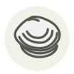

Clam
Palourde
| Latin name | Ruditapes decussatus |
|---|---|
| Family | Shellfish & molluscs |
| Origin | Eastern Atlantic & Mediterranean |
| Season (France) | September – March |
| Flavour | Briny · Sweet · Marine · Delicate |
| Typical price (France) | 12–20 €/kg |
What it is
They live buried in sand and filter water through a siphon, which means they are full of grit unless purged — a few hours in clean salted water and they spit it out themselves. No amount of rinsing achieves the same thing.
In the kitchen
Purge them in salted water, never fresh — fresh water kills them and they open and spoil.
Goes with
Garlic Parsley Olive oil Chili pepper White wine vinegar Hake Tomato Lemon
Also used with
Faba asturiana Kokotxas (hake throat) Nanohana (rapeseed blossom) Pochas Sea arrowgrass Kinome (sanshō leaf)
In season alongside
Surf clam Mantis shrimp Razor clam Soft-shell clam Stone crab claw Wedge clam
Something wrong here, or missing? Tell us